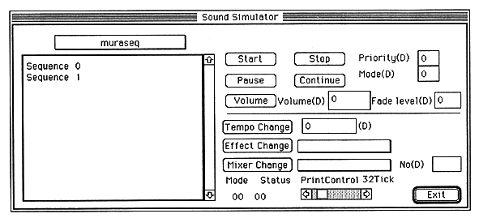

If a sequence bank has been transferred to the currently active current map, you can select the sequence bank from the pull-down menu above the file list box. When a sequence bank is selected, the sequence names contained in the bank are listed as shown above. Here, select the sequence you want to pronounce, and control the sound with the following buttons.
Tempo Change: Change the tempo to play. Tempo: Specify the tempo value you want to change. A positive value is faster and a negative value is slower. It is -32768-> + 32767 and doubled by 4096 (1/2 when minus). Start: Starts sounding. Stop: Stops sounding. Volume: Sets the sequence volume level and Fade in (out) speed. Fade level: Specify the Fade Level of Fade In / Fade Out. 0-> 255, 255 changes most slowly. Volume: Sets the volume. 0-> 127, 127 is the maximum volume Used in combination with Fade Level Pause: Pauses the sound. Continue: Restart from pause. Priority: Specifies the sequence priority of the sequence. 0-> 127, where 0 is the highest priority. Mode: Various modes can be set. Refer to the SATARN Sound Driver manual for details. Effect Change: Switches the DSP program. You can select from the pull-down menu. Mixer Change: Switches the Mixer. You can select from the pull-down menu. No: Sets the MixerNumber. 0->127 Mode: Shows what work the Sound Driver is currently doing. Status: Displays the current status of the Sound Driver. Print Control: Sets the Mode Status interrupt interval. It is 1Tick1 / 60 seconds from 8Tick to 200Tick. Exit: Exits Sound Simuration and closes the window.Note) Details of each control command are described in the chapter of the system interface. Please refer to .